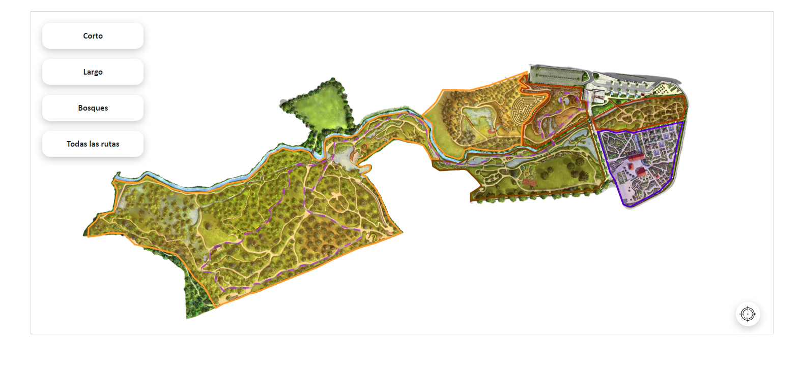

Desarrollador Web.
¡Hola! Bienvenid@ a mi web. Mi nombre es Joel Pescador y soy desarrollador web.
Durante el último año y medio he trabajado para el Ayuntamiento de Gijón en la escuela taller "Gijón Acompaña".
Durante este tiempo, he participado en varios proyectos. Algunos de ellos son:
-
DATOS ABIERTOS:
Creación de sitios web para que los datos públicos fueran accesibles y útiles para la ciudadanía.

-
APLICACIÓN WEB DEL JARDÍN BOTÁNICO:
Desarrollo de una aplicación web con un mapa interactivo para facilitar y enriquecer la visita al jardín botánico.
-
-

-
APLICACIÓN WEB DE LAS PLAYAS DE GIJÓN
Implementación de una solución para la recogida de datos en tiempo real sobre el estado meteorológico de las playas de Gijón.
Otros sitios realizados incluyen aquellos proyectos realizados para la escuela taller, tales como la Web de la E.T. o la Web sobre la Pluriculturalidad, cuyos objetivos eran exponer el trabajo que realizamos y mostrar y promover la diversidad presente en la escuela.
Actualmente, curso el Grado Superior de Desarrollo de Aplicaciones Web, lo que me permite estar al día con las últimas tecnologías y metodologías. Disfruto del trabajo en equipo y la colaboración, y siempre busco formas de innovar y mejorar los procesos.